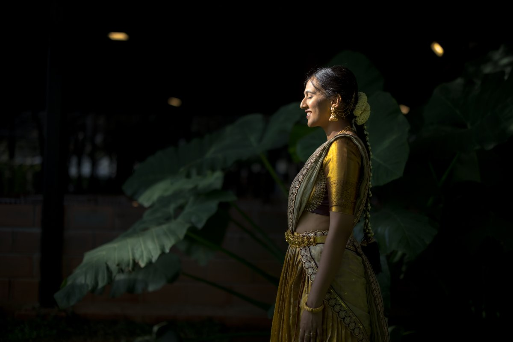
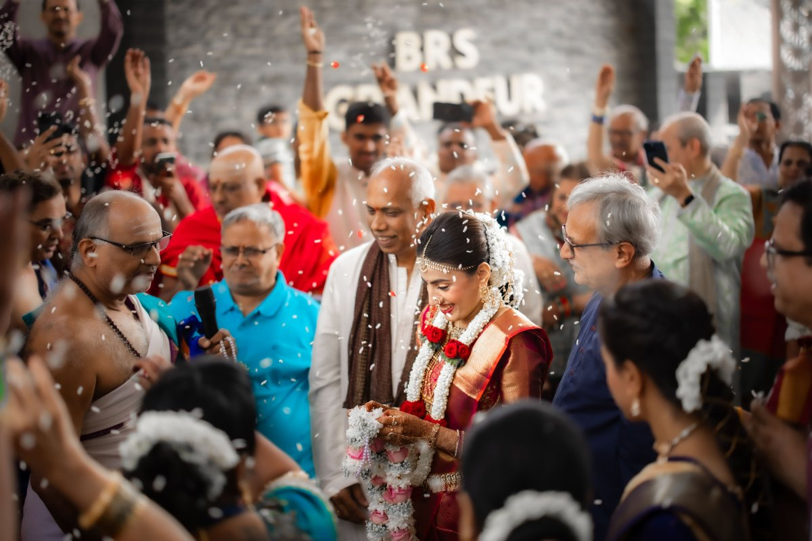
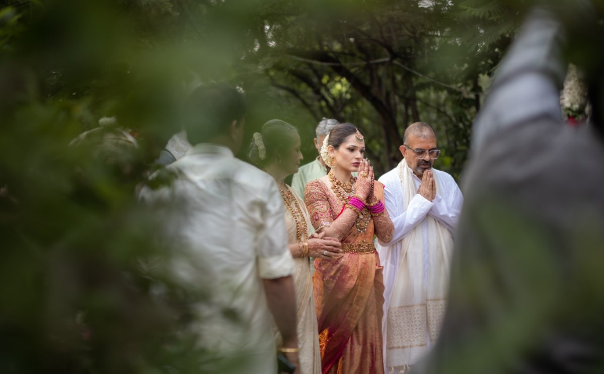
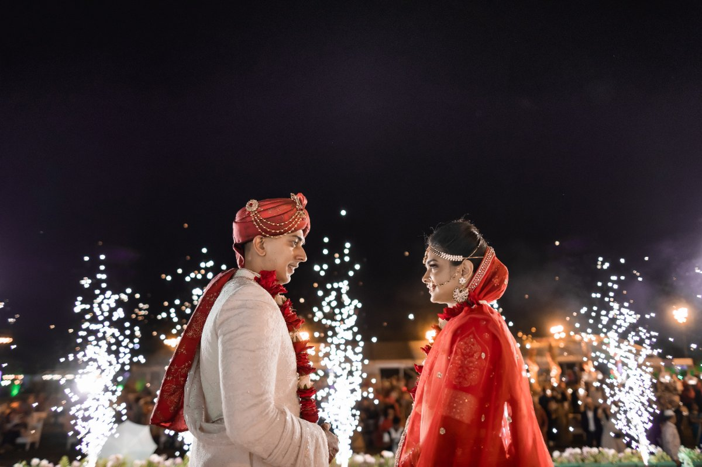
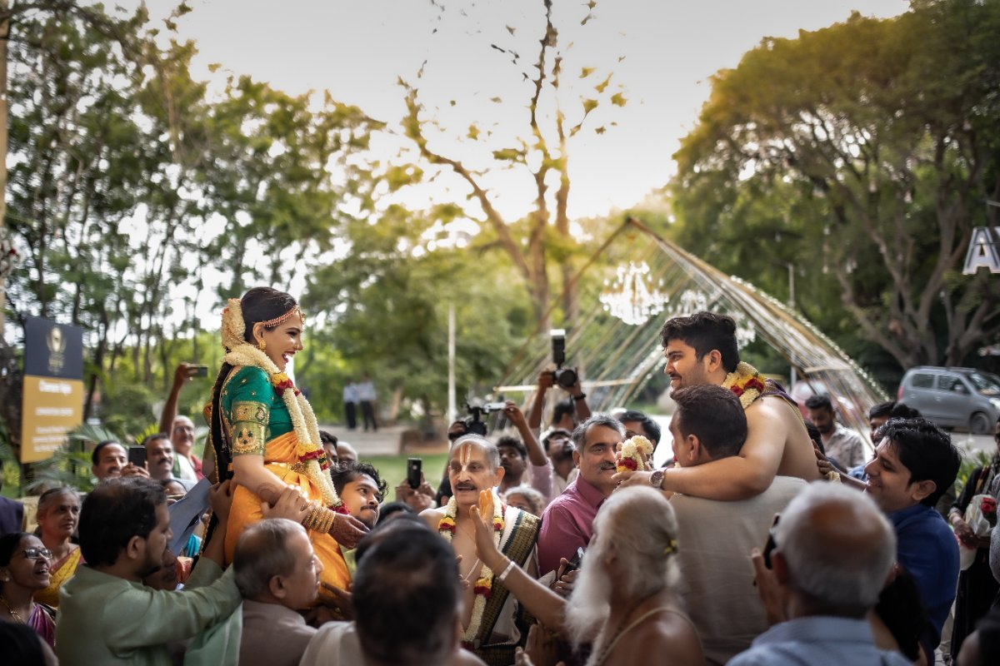
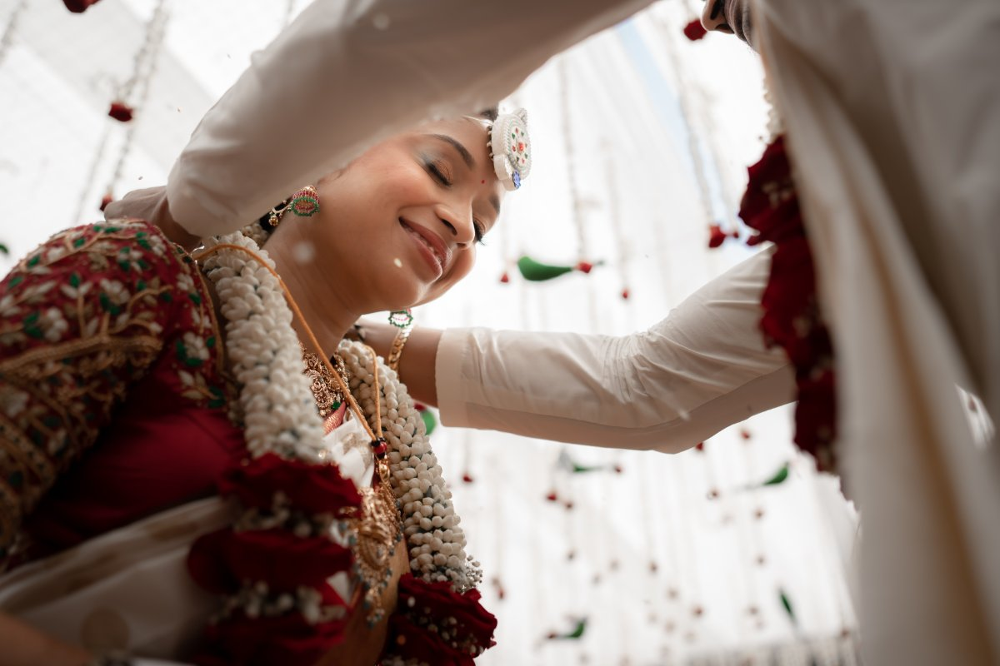

You get 28 to 31 minutes of golden light in this city. Not an hour. We plan the whole morning around that number, and around which locations will actually let you through the gate in 2026.
We shoot out of Konanakunte, in south Bangalore, and most of our pre-wedding mornings start before five. Over the years the same two things have gone wrong for couples who came to us after a bad experience: they were sold a location that no longer allows shoots, and they were sold a schedule built on a golden hour that does not exist at this latitude.
So this page leads with numbers rather than adjectives. The light tables below are computed from solar geometry for Bangalore's exact coordinates - our own calculation, not lifted from a weather site - and the location rules are current as of September 2026, including the Horticulture Department order that closed Lalbagh to pre-wedding shoots in November 2025.
If you only take one thing from this page: book the date around the light, then pick the location. Couples almost always do it the other way round, and that is why so many Bangalore pre-wedding galleries have twelve good frames and eighty flat ones.
"Golden hour" is a borrowed phrase. It was coined where the sun sets at a shallow angle and loiters near the horizon. Bangalore is at 12.97°N, close to the equator, where the sun comes down steeply and the warm light closes fast.
Measured properly - sun between the horizon and six degrees above it - Bangalore's golden window runs 28 to 31 minutes, morning and evening, all year. Sunrise moves nearly an hour across the year, from 05:54 in midsummer to 06:46 in January, but the length of the good light barely changes.
| Month | Sunrise | Morning golden | Mins | Be on location | Evening golden | Mins | Sunset | Light comes from |
|---|---|---|---|---|---|---|---|---|
| January | 06:46 | 06:46-07:16 | 30 | 06:26 | 17:42-18:12 | 30 | 18:12 | ESE / WSW |
| February | 06:42 | 06:42-07:11 | 29 | 06:22 | 17:57-18:25 | 29 | 18:25 | ESE / WSW |
| March | 06:27 | 06:27-06:55 | 28 | 06:07 | 18:02-18:30 | 28 | 18:30 | E / W |
| April | 06:07 | 06:07-06:36 | 28 | 05:47 | 18:04-18:32 | 28 | 18:32 | E / W |
| May | 05:54 | 05:54-06:24 | 30 | 05:34 | 18:08-18:38 | 30 | 18:38 | ENE / WNW |
| June | 05:54 | 05:54-06:24 | 31 | 05:34 | 18:16-18:47 | 31 | 18:47 | ENE / WNW |
| July | 06:01 | 06:01-06:31 | 30 | 05:41 | 18:20-18:50 | 30 | 18:50 | ENE / WNW |
| August | 06:07 | 06:07-06:36 | 29 | 05:47 | 18:12-18:41 | 29 | 18:41 | ENE / WNW |
| September | 06:09 | 06:09-06:37 | 28 | 05:49 | 17:53-18:21 | 28 | 18:21 | E / W |
| October | 06:10 | 06:10-06:38 | 28 | 05:50 | 17:32-18:01 | 28 | 18:01 | E / W |
| November | 06:18 | 06:18-06:48 | 30 | 05:58 | 17:20-17:50 | 30 | 17:50 | ESE / WSW |
| December | 06:34 | 06:34-07:04 | 31 | 06:14 | 17:25-17:56 | 31 | 17:56 | ESE / WSW |
The same calculation run at five latitudes shows the pattern clearly. The further you are from the equator, the longer the sun takes to cross those six degrees.
| City | Latitude | 21 Mar | 21 Jun | 21 Dec |
|---|---|---|---|---|
| Bangalore | 12.97°N | 28 min | 31 min | 31 min |
| Dubai | 25.19°N | 30 min | 33 min | 34 min |
| Delhi | 28.61°N | 31 min | 34 min | 35 min |
| London | 51.51°N | 44 min | 54 min | 62 min |
| Reykjavík | 64.15°N | 63 min | 113 min | 209 min |
This is why Pinterest boards mislead people. Most of the soft, endless-light couple photography that couples bring to us as reference was shot at 45°N or higher, where there is genuinely an hour of it. At 12.97°N you get roughly half of what London gets, and Reykjavík in December gets more than three hours. The technique has to change to match, which mostly means fewer setups, shorter walks between them, and lighting we bring ourselves for anything outside the window.
Computed with a NOAA solar-position implementation for 12.9716°N, 77.5946°E, IST. The same tooling produced our Dubai golden hour and Business Bay light line figures, where computed sunset times matched observed Dubai sunset to within a minute.
This is the part most location lists get wrong, including ours until recently. Rules in Bangalore's public gardens changed materially in 2025, and a lot of published advice - and a lot of photographers - have not caught up.
A Karnataka Horticulture Department notification dated 20 November 2025 prohibits pre- and post-wedding photoshoots and drone photography inside Lalbagh Botanical Garden, along with reels, modelling shoots, baby showers, and film and television shooting. Violations attract a Rs 500 fine. General walking access is limited to 5.30-9.00 am and 4.30-7.00 pm. The department's reasoning is that Lalbagh is a botanical garden holding germplasm collections rather than a general recreation park. Cubbon Park came under comparable restrictions a few months earlier.
Nandi Hills is the default answer when couples think "sunrise shoot near Bangalore". It is a good answer for part of the year and a poor one for the rest, and the reason is arithmetic rather than opinion. The gate opens at 06:00. The drive from the gate to the summit viewpoints takes about twenty minutes. In midsummer the sun is already up before you can get there.
| Month | Sunrise | Golden light ends | In position | Usable golden | Verdict |
|---|---|---|---|---|---|
| January | 06:46 | 07:16 | 06:46 | 30 min | full window - best months |
| February | 06:42 | 07:11 | 06:42 | 29 min | full window - best months |
| March | 06:27 | 06:55 | 06:27 | 28 min | full window - best months |
| April | 06:07 | 06:36 | 06:20 | 16 min | workable, arrive at opening |
| May | 05:54 | 06:24 | 06:20 | 4 min | marginal - most of the light is gone |
| June | 05:54 | 06:24 | 06:20 | 4 min | marginal - most of the light is gone |
| July | 06:01 | 06:31 | 06:20 | 11 min | marginal - most of the light is gone |
| August | 06:07 | 06:36 | 06:20 | 16 min | workable, arrive at opening |
| September | 06:09 | 06:37 | 06:20 | 17 min | workable, arrive at opening |
| October | 06:10 | 06:38 | 06:20 | 18 min | workable, arrive at opening |
| November | 06:18 | 06:48 | 06:20 | 28 min | workable, arrive at opening |
| December | 06:34 | 07:04 | 06:34 | 31 min | full window - best months |
In Jan, Feb, Mar and Dec you get the full window. In May, Jun and Jul you get under a quarter of an hour, and most of the warmth is gone before you have found your footing. We would rather show you this table than take a June booking and blame the haze afterwards. If your date falls in a difficult month, Hesaraghatta or a private estate will give you far more usable light for the same money.
Gate timing from the published Nandi Hills visitor hours; sunrise and golden-hour times computed as above. Location rules summarised from the Karnataka Horticulture Department's November 2025 Lalbagh notification as reported by Deccan Herald and The News Minute. Rules change; we re-check before every booking.
These are wedding-day frames from Bangalore couples rather than staged pre-wedding sets - the same team, the same approach to light.






Four tiers, which is genuinely how the work divides. Permits and location fees are billed at cost, not marked up.
| Tier | What it includes | Typical price |
|---|---|---|
| City studio (4 hrs) | 1 photographer, 1 set, basic edits | Rs 15,000 - 35,000 |
| City outdoor | 1-2 shooters, 80-120 edited photos, reel | Rs 40,000 - 90,000 |
| Day trip | Nandi Hills or Hesaraghatta, full team, drone, cinematic film | Rs 75,000 - 1,50,000 |
| Weekend | Coorg, Chikmagalur or Hampi; 2-day shoot, drone, full film, travel | Rs 1,50,000 - 3,50,000 |
The honest guidance: a city outdoor shoot in November or December will out-perform a more expensive day trip in June, because the light is the constraint, not the backdrop. Spend on the date before you spend on the drive.
Between 28 and 31 minutes, depending on the month. That is the whole warm window, not a warm-up to it. Bangalore sits at 12.97°N, close enough to the equator that the sun drops almost vertically instead of sliding along the horizon, so the light goes from gold to gone quickly. It is roughly half of what a London couple gets and a fraction of what you see in Scandinavian reference photos. We plan around it by locking the location the week before and shooting one setup properly rather than three badly.
No. A Karnataka Horticulture Department notification dated 20 November 2025 bans pre- and post-wedding photoshoots and drone photography inside Lalbagh, alongside reels, modelling shoots, baby showers and film or TV shooting. Violations carry a Rs 500 fine, and walking access itself is restricted to 5.30-9.00 am and 4.30-7.00 pm. Cubbon Park was brought under comparable restrictions a few months earlier. Older guides, including an earlier version of our own locations post, still quote a permit fee for Lalbagh. That route no longer exists. If a photographer offers you a Lalbagh shoot, ask them what changed in November 2025.
Nandi Hills, Hesaraghatta grasslands and lake, Bangalore Palace, private heritage properties, resort and estate grounds, and indoor studio sets are all still open to pre-wedding work. Bangalore Palace needs written permission arranged roughly two weeks ahead and charges a location fee. Nandi Hills has no photography fee but is gated at 06:00. Private estates and resorts are the most predictable option because access is contractual rather than discretionary, which matters when you have one morning and a hired outfit.
Earlier than almost everyone expects. Sunrise in Bangalore runs from 05:54 in midsummer to 06:46 in January, and the morning golden window closes within half an hour of it. The 'be on location' column in the table above already includes 20 minutes for parking, changing and the first frames, so treat it as the time you are standing in position, dressed, not the time you leave home. For a Nandi Hills sunrise that usually means leaving central Bangalore around 04:30.
In Jan, Feb, Mar and Dec, yes. The gate opens at 06:00, the climb to the viewpoints takes about 20 minutes, and in those months sunrise is late enough that you still catch the full window. In May, Jun and Jul the sun is already up before you can reach the top, leaving under a quarter of an hour of usable light. We would rather tell you that in advance than take the booking and blame the weather afterwards.
A four-hour city studio session with one photographer runs Rs 15,000 to Rs 35,000. A city outdoor shoot with one or two shooters, 80 to 120 edited images and a reel is Rs 40,000 to Rs 90,000. A day trip to Nandi Hills or Hesaraghatta with a full team, drone and a cinematic film is Rs 75,000 to Rs 1,50,000. A two-day weekend shoot in Coorg, Chikmagalur or Hampi with travel is Rs 1,50,000 to Rs 3,50,000. Permits and location fees are billed at cost.
It depends entirely on the location. Drone photography is banned outright inside Lalbagh. Elsewhere it needs the landowner's permission and compliance with DGCA rules, which is straightforward on private estate land and awkward to impossible in central Bangalore. We confirm this per location before quoting rather than promising aerials and apologising later.
Six to ten weeks for a city or day-trip shoot, and longer if you want a specific weekend between November and February, which is both the best light and the busiest season. Bangalore Palace permissions want about two weeks on their own. If your wedding is already close, tell us the date anyway - we hold a few short-notice mornings each month.
Pre-Wedding Shoot Locations Near Bangalore · Wedding Photography Cost in Bangalore · Pre-Wedding Shoot Ideas · Couple Reels & Instagram Shoots · How to Choose a Wedding Photographer · Destination Wedding Photography · South Indian Wedding Photography · Wedding Photographer India